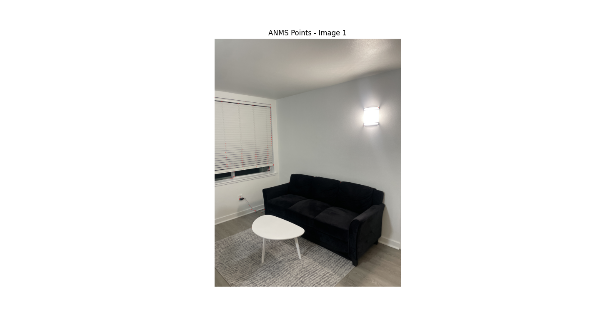
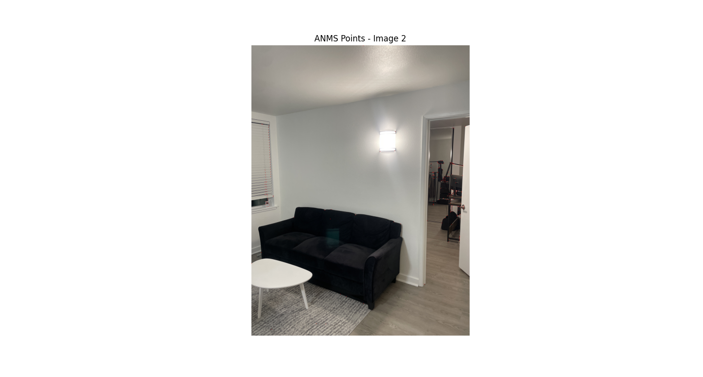
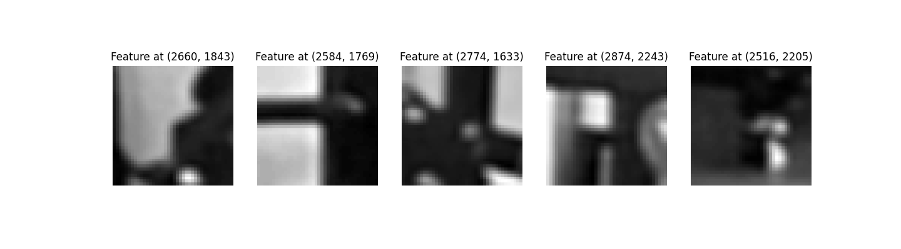
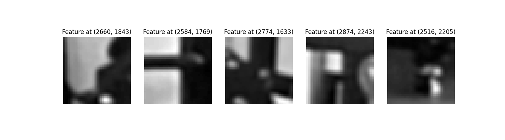
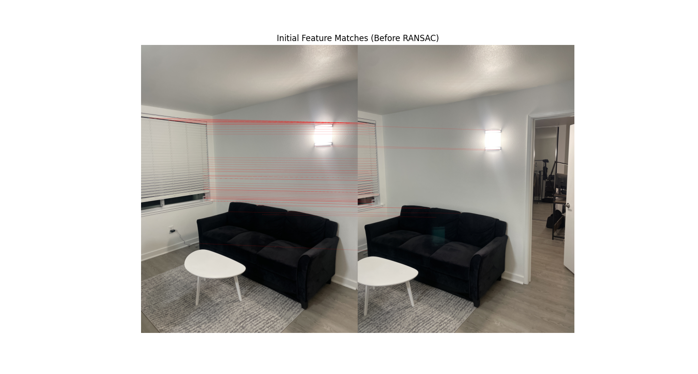
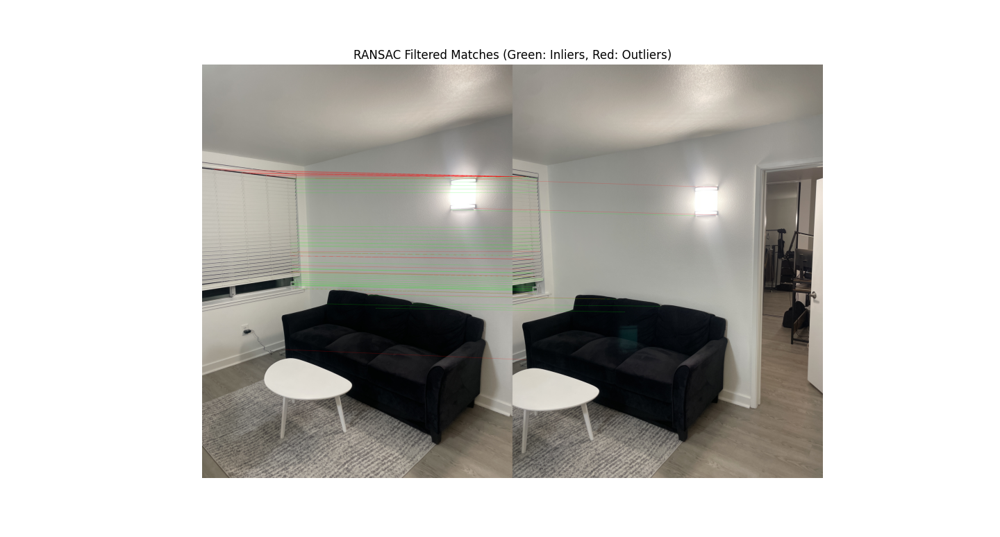
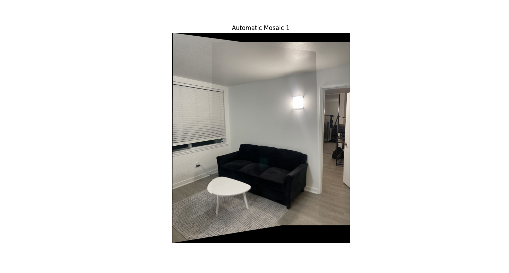
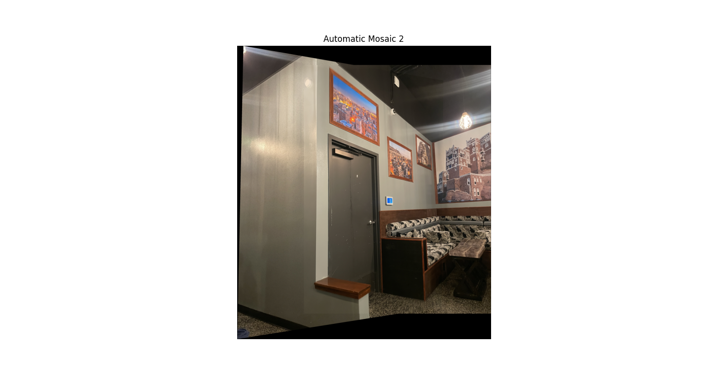
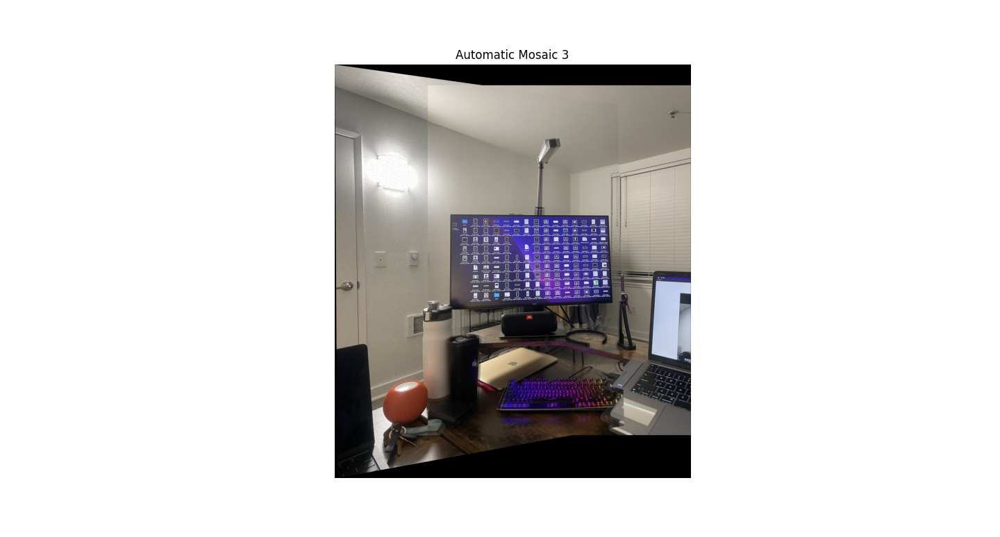

Overview
This project involves stiching images into a mosaic, both manually and automatically. I was able to capture my own source photographs, define correspondences between them, then warp and composite them for the manual approach. For the automatic approach, I detected corner features, extracted a feature descriptor for each point, matched those descriptors, and used a robust method RANSAC to compute the homography.
Manual Approach (Part A)
Shoot the Pictures
I was able to capture pictures of the living room, bedroom, and a cafe for image warping and mosaicing. Two images are taken for each scene, with both images having significant overlaps for better outputs.

|

|
I also took pictures for rectification. One is from my bedroom, and the other one is from the cafe.
Recover Homographies
The correspondence points are chosen using the tool provided from project 3. The points are defined based on objects that the two images share in common. Using the correspondence points, I recovered the homographies by using the following implementation.
Warp the Images
I was able to warp the images for living room and cafe.
I was also able to rectify some rectangular objects from the two scenes: one laptop and one painting. This was done by selecting the four corners of the rectangular objects as the corresopndence points using the user interface.
Blend Images into a Mosaic
To further improve mosaicing, I can use a blending technique to further smoothen out the warping process. I used weight averaging to get rid of the noticeable artifacts, and I also incorporated Laplacian pyramid to make sure the two images are blended smoothly.
Automatic Approach (Part B)
Harris Point Detection & ANMS
Zoom into the images to find where the points are detected. The tiny red points located in each of the image indicate the points detected. The red points are located mostly on the curtains of each image, just for your information.
 Feature Descriptor Extraction
 

Feature Matching
The red lines indicate the points that are being matched among the two images.
RANSAC
Using RANSAC, I was able to match more features between the two images.
Automatic Stiching Images into a Mosaic
The following are the results of automatically stitching the images using the method from the paper.
  